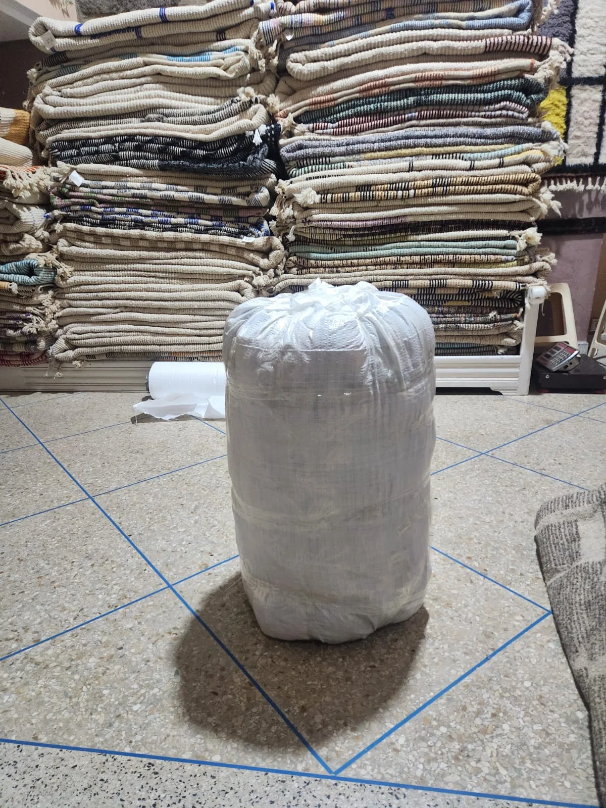

Azilal: symbols placed by instinct, not pattern
Azilal rugs take their name from the Azilal province in the High Atlas, woven by Berber women largely for their own homes rather than for trade — which is part of why the style reads so differently from more commercially established Moroccan weaves. There's no lattice grid to fill in, no repeating motif carried down a template. A weaver works from a plain wool field — usually undyed ivory or cream — and places symbols across it by eye: a diamond here, a cross there, a stray line connecting two shapes that otherwise have nothing to do with each other.
That looseness is the entire appeal. Where a Beni Ourain's diamond lattice is meant to repeat evenly across the whole field, an Azilal's marks are deliberately unmatched — asymmetric placement, inconsistent spacing, colours that shift slightly from one motif to the next. It reads as closer to abstract art than to traditional rug-making, which is exactly why Azilal rugs found a second life as sought-after pieces among designers building modern, gallery-like interiors.
- Origin: Azilal province, High Atlas Mountains
- Materials: Hand-spun wool, usually an undyed ivory or cream ground
- Technique: Hand-knotted pile, low-to-medium density, improvised symbol placement
- Pattern: Sparse, abstract, asymmetric — no repeating grid
- Rarity: Genuinely scarce; each piece is a one-off, not a production run

Boucherouite: woven from what was left over
Boucherouite means, roughly, "torn/recycled" in Moroccan Arabic, and the name is literal. Rather than wool, a Boucherouite is woven from strips of leftover fabric — cotton, wool remnants, old clothing, plastic packaging thread, whatever a household had on hand. The tradition began out of necessity: wool was expensive, fabric scraps weren't, and weavers who couldn't afford a full wool warp built rugs from what was already in the house.
What makes Boucherouite genuinely distinctive today is that this constraint produced a look nothing else in the Moroccan weaving tradition has: dense, saturated, almost collage-like colour, because every strip of recycled fabric carries its own original dye. Two Boucherouite rugs are never woven from the same source materials, which means — more than any other style — no two are remotely alike.
"An Azilal is restraint on a wool field. A Boucherouite is abundance from someone else's scraps. Both refuse the grid every other Moroccan rug follows."
- Origin: Middle Atlas households, historically a thrift tradition rather than a single region's specialty
- Materials: Recycled textile strips — cotton, wool remnants, and reclaimed fabric, rather than fresh-spun wool
- Technique: Woven or knotted, structure varies by what materials were available
- Pattern: Dense, saturated, irregular colour blocking driven by the source fabric
- Sustainability: A genuinely pre-industrial recycled-textile tradition, not a modern marketing angle

How to recognise a genuine piece of either style
For an Azilal: look for genuine irregularity. If the symbols are evenly spaced or clearly repeat in a template, it's more likely a mass-produced rug styled to look "Azilal" than an authentic improvised piece. Hand-spun wool with slight thickness variation is another tell — the same check used for any hand-knotted Moroccan rug.
For a Boucherouite: check that the colour actually comes from mixed fabric sources — slightly different textures, sheens, and weights within the same rug — rather than a uniform yarn simply dyed in many colours to imitate the look. A genuine Boucherouite should feel like it's made of many small, different things, because it is.
Where each works in a home
Both styles are best used as a deliberate accent rather than a room's foundation — their scarcity and character reward a room built to let them stand out.
Azilal works well in a reading nook, a bedroom, or any quieter space where its sparse, asymmetric marks can be appreciated up close rather than glanced at across a large room. Its lighter construction also suits layering over a larger neutral rug.
Boucherouite earns its place as a bold accent in an otherwise neutral room — a single saturated piece under a console table, in an entryway, or as a compact statement in a small space where a full-size wool pile rug would be too much.
What should you expect to pay?
Both styles are harder to price by simple size-based tiers than more standardised weaves, because scarcity and individual character matter more than square footage. As a general range for the smaller-format pieces most commonly available:
- Azilal, small-to-medium format: $500 – $900
- Boucherouite, compact format: $400 – $800
Because so few of either style exist at any given time, a genuine piece you like is worth acting on rather than waiting for — these are not restocked the way a standard-format Beni Ourain or Boujaad can be.
See Tiziri's current Azilal and Boucherouite pieces — each one genuinely one of a kind.
Shop Azilal & BoucherouiteThe bottom line
Azilal and Boucherouite sit at opposite ends of the same idea: both refuse the geometric templates that define most Moroccan weaving, and both do it for reasons rooted in how they were actually made — one from instinct on a loom, one from whatever fabric a household had left over. If you want a piece that reads as art first and floor covering second, these are the two traditions to start with.
If you'd like help choosing between the two for a specific space, contact us — we're happy to advise without any obligation.